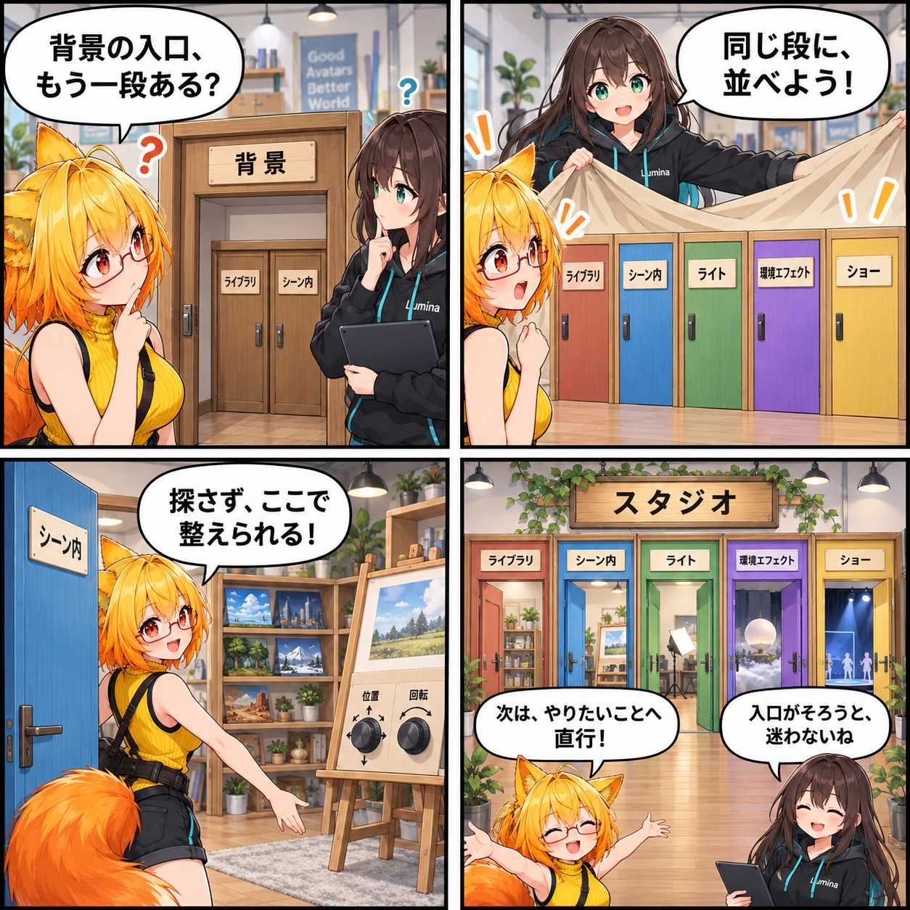

スタジオを、ひと続きの入口にした日
Desktop版のStudioは、背景を探す場所、シーン内で調整する場所、光や環境を整える場所、ショーを扱う場所へ、同じ高さの入口から進めるようになりました。背景だけがもう一段のタブを持っていた構成をほどき、Studioの作業を一列の5タブに整理した変更です。

Studioを開いたら、まず背景ライブラリへ
左のSidebarにある「スタジオ」から入るDesktopのStudio画面は、背景ライブラリを既定入口にしました。そこで背景を探し、読み込み済みの背景を扱いたいときは、すぐ隣の「シーン内」へ進めます。以前のように、背景の中でさらに「ライブラリ / シーン内」を選ぶ二重の階層にはしていません。
5つの仕事を、同じ段に並べる
Studioのコンテキストタブは「ライブラリ」「シーン内」「ライト」「環境エフェクト」「ショー」の5つです。旧「概要」タブを残さず、各作業の入口を同列にしました。背景のライブラリとシーン内背景、光源、環境表現、ショーを行き来するときに、どこが親画面でどこが子画面かを意識しなくてよい構成を目指しています。
背景の一覧と調整を、同じ作業面に
背景ライブラリとシーン内背景の操作は、DesktopのMainAreaを使う全面パネルへまとめました。特にシーン内背景では、読み込み済み背景の一覧と、位置・回転・スケールなどの背景Transform調整を同じ作業面で扱います。背景を選んだあと、調整だけのために別のInspectorを探す必要がない形です。
構造の取り残しも検証する
今回の変更ではUI prefab validatorも更新しました。新しいStudioの要素を要求しつつ、旧BackgroundPageや旧BackgroundTabsが残っていないことを確認する対象にしています。画面を一段にそろえる変更だからこそ、古い入口が混ざらないようにするための検証です。
4コマの裏話
二重だったドアが、5つの横並びのドアになる寸劇です。ドアの札はStudioの5タブ、同じ部屋にある背景棚と調整用イーゼルは、一覧とTransform調整を同じMainAreaで扱うことの比喩です。アプリ画面や実行結果そのものではありません。
まとめ
Desktop版のStudioは、背景ライブラリを既定入口にした「ライブラリ」「シーン内」「ライト」「環境エフェクト」「ショー」の一段5タブへ整理されました。背景の二重階層と旧概要を外し、シーン内背景の一覧と調整を同じ全面作業面へまとめた変更です。
本日のひとこと
入口がそろうと、次の作業へまっすぐ行ける。